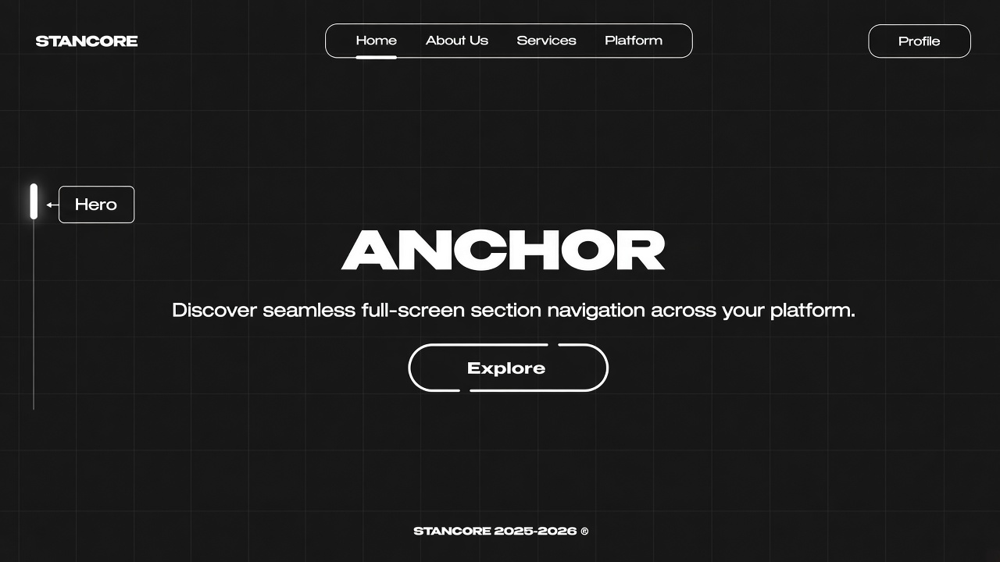
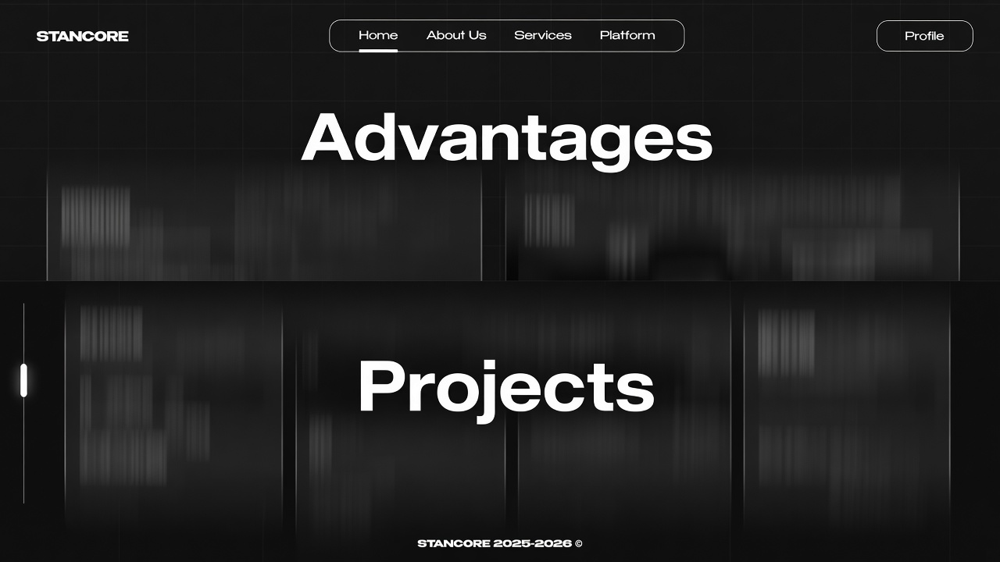
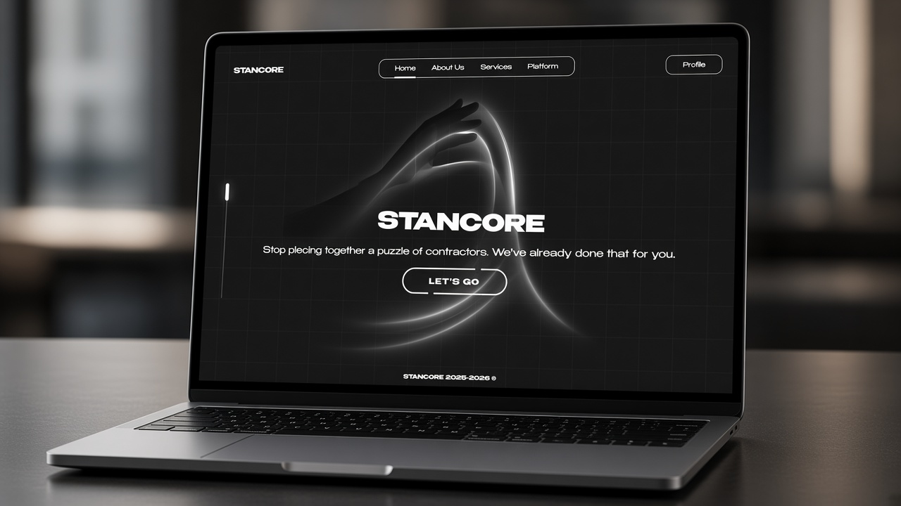

Stancore · Section navigator
Anchor
Same full-screen swipe rhythm as Stancore — one viewport, one section, progress on the rail.

Wheel · Keys · Touch
Swipe the page.
Discrete section changes with a 500 ms lock — the motion people feel on stancore.net, packaged as a drop-in script.

CDN or local files
Ship it anywhere.
Declare sectionIds, mount the thumb, load Anchor — the rail and swipe do the rest.